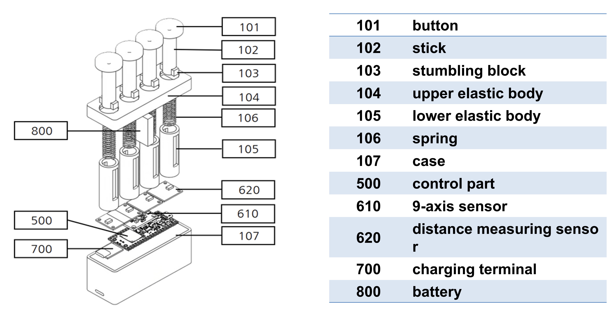
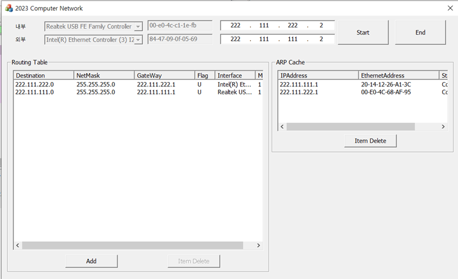
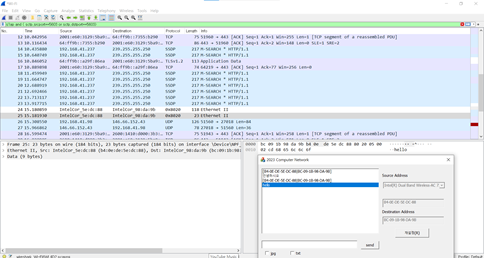
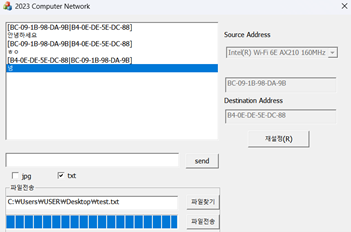
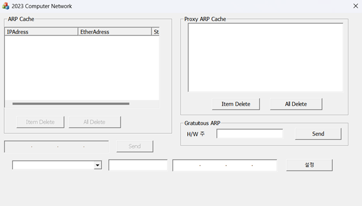

uart_teleop_bridge / sensor_bridge 노드 구축 — 명령은 UART(/dev/ttyTHS1), 센서 텔레메트리는 USB CDC(/dev/ttyACM0)로 링크를 분리해 텔레메트리가 명령을 지연시키지 않게 설계. 두 링크 모두 CRC-16으로 프레임을 검증하고, 정상 프레임을 /imu/data, /wheel/twist 토픽으로 파싱·발행
적분(I) 전용 폐루프 속도 제어기 — 저속 구간에서 P 제어가 정지마찰을 못 넘는 문제 확인. PD는 순간 출력만 높이고 축적이 안 되어서, I 단독으로 전환 — 듀티가 서서히 쌓이며 마찰력을 자율 돌파
EKF 입력 축 설계 — 엔코더 vx와 IMU yaw rate만 융합. 실제 주행 중에도 0에 가깝게 읽던 rf2o(LiDAR 오도메트리)는 융합에서 제외하고, 애커먼 차량은 옆으로 못 간다는 점을 이용해 vy=0을 측정값으로 넣어 횡방향 발산을 막음
Nav2 장애물 대응 9겹 원인 분석 — "장애물 앞에서 멈추고, 사라진 장애물이 지도에 남는" 문제를 인식·대응·기동성 9개 원인으로 분해. 가장 큰 원인인 BT 재계획 루프 부재, 글로벌 costmap의 ToF 누락, 한 번도 실행된 적 없던 시동 킥 코드 등을 수정
Maximum 병합 기반 센서 레이어 분리 — ToF clearing이 LiDAR 장애물을 덮어쓰는 문제를 costmap 결합 수식 분석 후 레이어 격리
forklift_teleop 패키지 — 19개 노드/모듈 + 12개 테스트 파일 직접 작성
트러블슈팅 — DDS 통신 단절 원인 추적
데모 3일 전, 액션 응답 유실 + TF 끊김이 간헐 발생. "보드 재부팅"이라는 임시 대응을 거부하고 원인을 추적:
상위 노드 로그 → 토픽 구독 자체가 누락되는 것 확인
/dev/shm 확인 → 비정상 종료 후 세마포어 파일 잔여 발견
정상 종료 vs 강제 종료 비교 → 강제 종료 시 잠금 파일 미해제 확인
찌꺼기 수동 삭제 → 일시 복구되나 재발. 대증요법 한계
단일 보드 내 통신 비중 분석 → 공유메모리가 불필요한 구간이 대부분
fastdds_no_shm.xml 프로파일 작성, UDPv4 로컬 루프백 전환
결과: /dev/shm 세그먼트 109 → 4, 통신 오류 0%
Power Up — 재활 악력 컨트롤러2024 · 4인 팀 · CEDC 국제 경진대회 은상
편마비 환자의 재활 운동은 반복이 지루해서 중도 포기율이 높다는 문제에서 출발. 스프링 버튼을 눌러 악력을 훈련하고, 손목 기울기로 조작하는 악력기형 IoT 게임 컨트롤러를 만들어 Unity 재활 미니게임과 BLE로 실시간 연동.
임베디드 펌웨어 — 하드웨어 전체 + BLE
MicroPython · Raspberry Pi Pico W · I2C · VL6180X ×4 (ToF) · MPU9250 (9축 IMU) · BLE

0x29 → 개별
I2C 주소 충돌 해결 (GPIO 순차 전원 + 레지스터 재할당)
23 → 150 B
BLE MTU 확장 (패킷 유실률 0%)
100-sample
지자기 캘리브레이션 (하드/소프트 아이언 보정)
내가 한 것
I2C 주소 충돌 우회 — VL6180X 4개가 동일 주소 0x29. I2C MUX를 쓰면 보드 면적과 배선이 늘어나서, GPIO 순차 전원 인가 후 레지스터에서 주소를 런타임 재할당하는 소프트웨어 방식을 선택
BLE MTU 확장 — JSON 센서 데이터가 23바이트 기본 MTU에서 잘림. 패킷 분할 전송은 수신 측 재조립 로직이 필요해서, ble_simple_peripheral.py에서 self._ble.config(mtu=150) 협상으로 단일 패킷 전송 유지
지자기 캘리브레이션 — 사무실 철제 프레임의 하드/소프트 아이언 왜곡으로 방위각이 엉망. 부팅 시 100회 샘플의 축별 최대·최소로 중심 오프셋(하드 아이언)과 축별 스케일(소프트 아이언)을 함께 보정
트러블슈팅 — I2C 버스에서 4개 센서 동시 인식 실패
VL6180X 4개를 I2C 버스에 연결했더니 전부 0x29로 응답해서 하나만 읽힘:
VL6180X 데이터시트 확인 → 하드웨어 주소 핀이 없음, 레지스터(0x0212)로만 변경 가능
전원을 한꺼번에 넣으면 4개가 동시에 0x29로 올라와서 구분 불가
GPIO 4개로 각 센서 SHDN 핀 제어 → 하나씩 전원 인가 후 주소 변경 시도
1번 켜고 → 주소 42로 변경 → 2번 켜고 → 주소 43으로 변경 → 반복
결과: 4개 센서 개별 주소 할당 완료, I2C 스캔에서 4개 모두 독립 인식
네트워크 프로토콜 스택 — ARP · 채팅/파일 전송 · 라우팅 테이블2023 · 7인 팀 · 팀장 · 컴퓨터네트워크 A+
TCP/IP 스택의 동작 원리를 코드로 이해하기 위한 컴퓨터네트워크 과제. 수업에서 제공한 계층 뼈대(CBaseLayer · CLayerManager) 위에 Ethernet · IP · ARP · 응용 계층을 구현하고, Npcap으로 실제 NIC에서 프레임을 주고받는 프로그램 3종(채팅·파일 전송, ARP, 라우팅 테이블)을 제작.
팀장 (7인) — 계층 구현 · 일정 조율
C++ · MFC Framework · WinPcap/Npcap API · Multithreading

라우팅 테이블 + ARP 캐시 (입·출력 NIC 2개 바인딩)

Wireshark 송신 캡처 — Npcap으로 실제 이더넷 프레임 전송

Ethernet 계층 위의 채팅 + 파일 전송

ARP 캐시 / Gratuitous ARP
팀 구현 내용
ARP 계층 — Request/Reply 처리. 캐시 엔트리마다 타이머 스레드를 붙여 Incomplete는 3분, Complete는 20분 뒤 자동 삭제. Gratuitous ARP를 송신하고, 수신 시 기존 엔트리의 MAC을 갱신
파일 전송 계층 — 파일을 1448바이트 조각으로 나누고 첫 조각에 파일명·크기를 실음. 조각마다 ACK를 기다리는 stop-and-wait, 수신 측은 시퀀스 번호로 정렬해 재조립
채팅 계층 — Ethernet 프레임 하나에 담기지 않는 긴 메시지를 분할 전송. 첫 프레임에 전체 길이를 싣고 수신 측에서 이어 붙여 복원
Npcap 송수신 스레드 — 블로킹 호출인 pcap_next_ex 수신 루프와 파일 전송을 AfxBeginThread 작업 스레드로 분리해 UI가 멈추지 않게 함
라우팅 테이블 — Destination · NetMask · Gateway · Flag · Interface · Metric 엔트리 추가/삭제, 입·출력 NIC 2개 선택
설계 — 이더넷 위에서 파일을 빠짐없이 보내기
Ethernet 계층은 전달을 보장하지 않으므로, 파일 전송 계층이 직접 순서와 수신 확인을 맡았다:
보낼 파일을 미리 1448바이트 조각 리스트로 나눔. 0번 조각은 파일명·크기, 마지막 조각은 FINAL 타입으로 표시
송신 스레드는 조각을 보낸 뒤 그 시퀀스 번호의 ACK가 올 때까지 10ms 간격으로 재전송
수신 측은 조각을 받을 때마다 ACK를 돌려보내고 리스트에 쌓음
FINAL 조각을 받으면 시퀀스 번호로 정렬해 파일에 기록. 진행률은 프로그레스 바로 표시
RC카 자율주행 라인 트레이싱2026.05 – 06 · 2인 팀 · SSAFY 1학기 관통 프로젝트 (144시간)